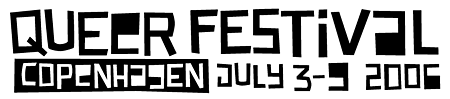

| Invitation |
|
 Raahuset, Halmtorvet, Copenhagen www.queerfestival.org Invitation to queer activists and artists in Denmark and world wide. The copenhagen activist art group dunst has taken the initiative to arrange an Queer Festival 2006, 3-9 July in central Copenhagen in the art and exibition space "Raahuset". The aim with the festival is to gather and develop manifestations of queer culture and activism. The festival is concerned with alternative identity, lifestyle, gender and sexuality, which lie outside hetero sexual norms. The present steering group has outlined some principles for the festival and initiated a collaboration with Copenhagen city council for Art & Culture. So far we have made decisions about the time, the place and the overall structure. The next step is to invite interested people from any queer movement or individual who wish to participate in the development of the festival. THE FESTIVAL The festival lasts one week, where artists and activists from all over the world work with their different artistic, social and sexual political activities. The culmination of the festival is a weekend programme within the different areas. PROGRAMME The festival will have WORKSHOPS and programme for ART EXHIBITIONS, PERFORMANCE, MUSIC and EVENTS. Some things are open to the general public and some are only for the festival participants, who wish to attend. During the week the final public programme for the weekend 7 - 9 JULY will be made. WORKSHOPS & EVENTS monday 3. july - sunday 9. july FESTIVAL PROGRAMME friday 7. july - sunday 9. july ---------------------------------------------------------------------------------- The first meeting for visions and the formation of the steering group and planning groups will be held: Thursday 26.01.2006 19:00 in Raahuset, Halmtorvet 14E, central Copenhagen see map INTRODUCTION & VISION 1) presentation of the concept 2) brainstorming & visions 3) formation of steering group & planning groups ---------------------------------------------------------------------------------- ABOUT THE ORGANISERS dunst is an sexual politcal art and activist group, who has arranged parties, actions and political events for about 5 years. We have experience within art, music, performance and activism and good international contacts. With this festival we hope to establish an international manifestation of queer art and culture in collaboration with organisations and individuals world wide. x www.dunst.dk |